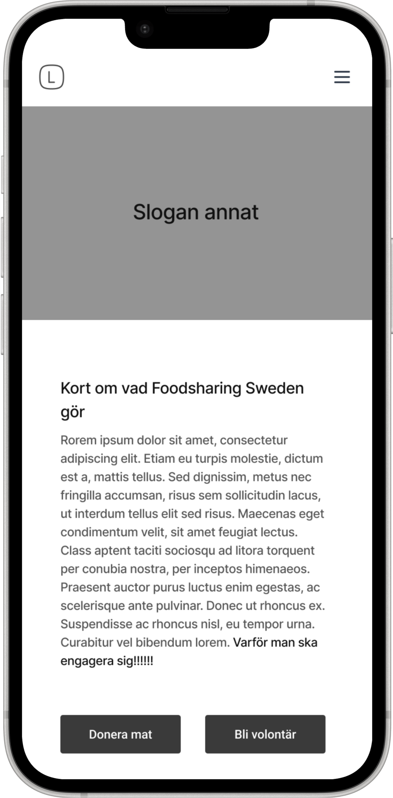
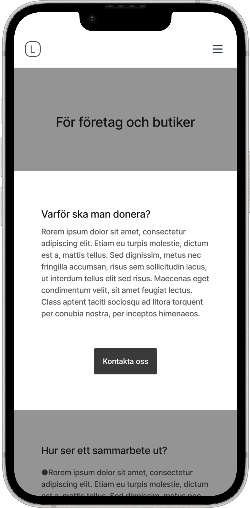
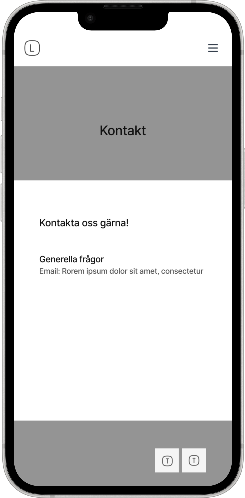
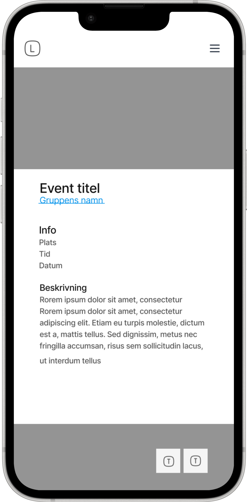

Foodsharing Sweden
UX/UI design • Branding

UX/UI design • Branding
6 months
Volonteer project
Solo Ux designer
Completed
In Sweden, a lot of food is wasted every day. Foodsharing Sweden works to reduce food waste by redistributing surplus food to people who can use it. When I started working on the project, Foodsharing Sweden didn’t have a full website. There was only a temporary page, so the goal was to create a digital space where people could easily understand what Foodsharing Sweden does and find out how they can get involved. The website needed to work for several different groups of people, each with their own needs. I wanted to create a structure that made it easy for people to find the information they were looking for and understand what they could do next.
Before starting on the website, I wanted to get a better understanding of both Foodsharing Sweden and the people who would use it. I looked through workshop material and internal documents to understand the organisation, its goals and how it currently works. I also used surveys and discussions with active volunteers to learn more about their experiences, needs and what they would want from a future website. Since the website would eventually need to be developed, I also discussed the structure and ideas with a developer to make sure the direction was realistic and possible to build. This gave me a better understanding of the different people the website needed to support and helped me decide what information needed to be easy to find.

Since finding information was one of the biggest challenges, I wanted to create a structure that made the website easier to understand and navigate. I organised the website around four main user groups: volunteers, food donors, people receiving food, and people who want to start their own local foodsharing group. Each group comes to Foodsharing Sweden with different questions and needs, so I wanted to make it easy for people to understand where they belong and find the information that is relevant to them.

The sitemap became the foundation for the rest of the design process and helped me move from a large amount of information to a clearer and more manageable structure.
With the structure in place, I started exploring how the different parts of the website could work together in practice. I created wireframes to work out the layout, hierarchy and navigation before moving into the visual design. This allowed me to focus on the content and user flow first, without getting distracted by colours, fonts and other visual details. I then developed the wireframes into an interactive prototype in Figma. This helped me see how the different pages and user journeys connected and gave me a way to try out the experience before moving on to the final design.






Once the structure and user flows were in place, I could start exploring how the website should look and feel. I wanted the visual direction to reflect what Foodsharing Sweden is about: sustainability, community and making foodsharing feel approachable. I explored colour, typography and illustration to create something that felt friendly and energetic while still being clear and easy to use.
I chose a palette inspired by food, nature and the idea of sharing. The colours are meant to feel playful and welcoming while still giving the interface enough contrast and structure.

I wanted the typography to feel approachable but also be practical for the organisation to use. Since Foodsharing Sweden is run by volunteers, I chose commonly available fonts so that people working with the website would be able to create and edit content without needing access to specialised fonts.

I also used illustration to give the website more personality and make the experience feel less formal.

The new design will be implemented here
Foodsharing Sweden